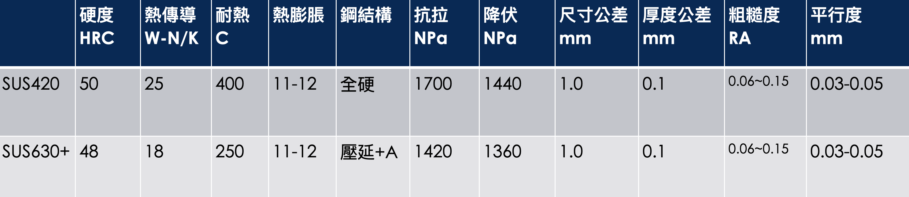
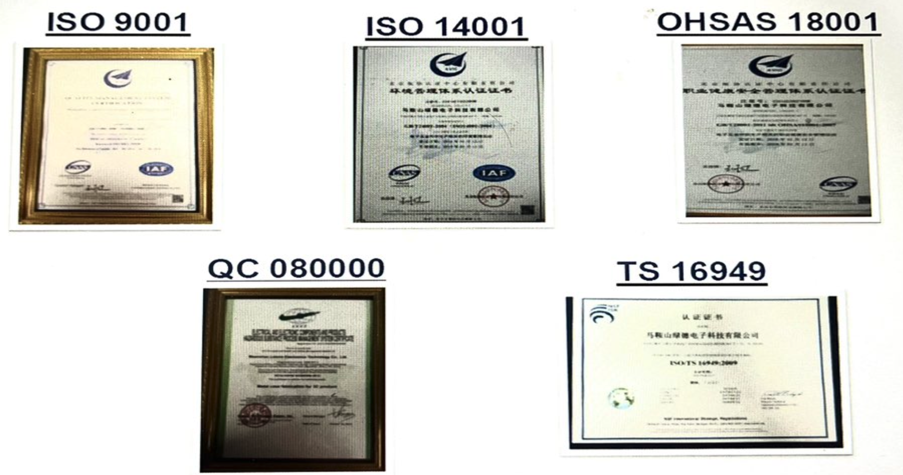

品質管理
SUS420全硬鋼系列
- 代理中國最大最新SUS420開發壓合鋼板，全硬鋼高硬度50HRC不變形，耐高溫400度不軟化
- 代理新一代非壓延型SUS630+高硬度壓合鋼板，承襲以往材料特性經特殊製程增加硬度表現，無須變更壓合操作參數，更耐磨耐用
台灣設有檢驗品管倉儲運輸中心提供就近服務，並於樹林設立鋼板研磨中心
提供高精密業界最精細的粗糙度，最低達0.06RA
產品規格



品質與 ISO 認證
